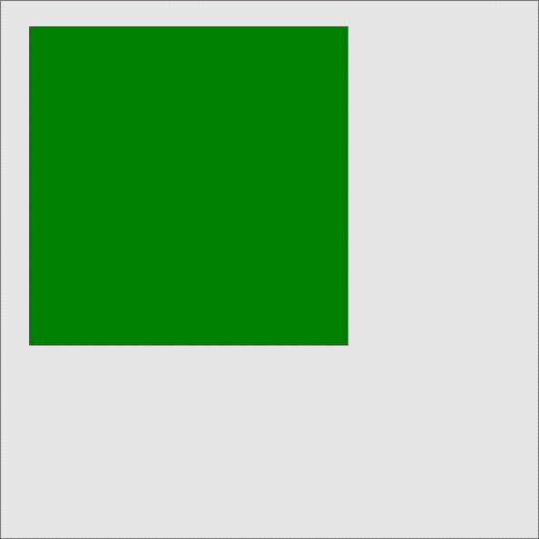

What does sea ice do all day?
Dr Adam Steer
Why study sea ice?
Sea ice grows in winter
making super salty cold water
which sinks
and travels along the sea floor
driving global overturning circulation
which helps keep seasons stable
so farmers can tell reliably
when to plant and harvest
barley, hops and grapes.
Sea ice melts in summer
making warm, fresh, water
full of dust and algae
which adds nutrients to the ocean
and draws down a lot of carbon
which helps keep our atmosphere stable
so farmers can tell reliably
when to plant and harvest
barley, hops and grapes.
We don't know how thick it is!
The scales of sea ice
19 000 000 to 21 000 000 square kilometres of the Southern Ocean are ice-covered every winter.
Australia has about 7 000 000 square kilometres of land.
Measuring sea ice
Yes, it gets personal
Lasers and helicopters
Bridging the human-satellite scale divide
New approaches in the field
Fusing new tech and established practices
 Photo from: https://www.whoi.edu/news-release/SeabedAntarctic - collected by the AAD ROV team, 2012
Photo from: https://www.whoi.edu/news-release/SeabedAntarctic - collected by the AAD ROV team, 2012

What about supercomputers?

Modelling sea ice
Watch the full video produced at the National Computational Infrastructure